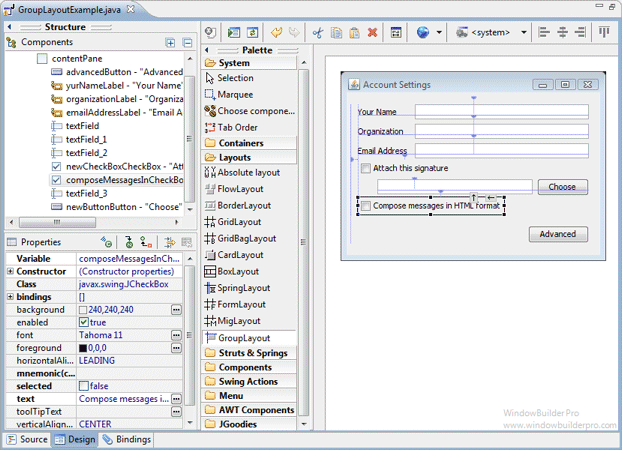
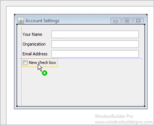
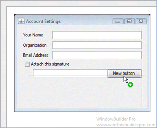
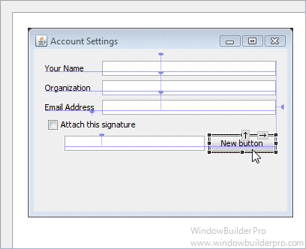
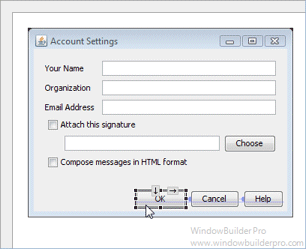
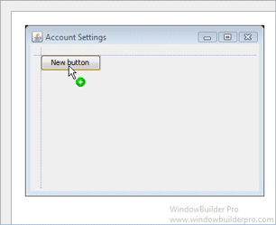
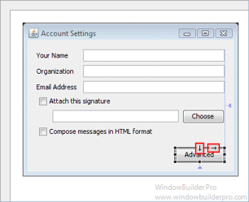
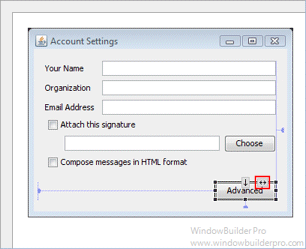
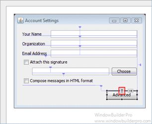
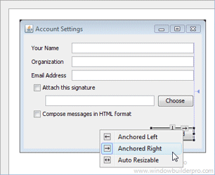

GroupLayout is a LayoutManager that hierarchically groups components
in order to position them in a Container. GroupLayout is intended for use
by builders, but may be hand-coded as well. Grouping is done by instances of the
Group class. GroupLayout supports two types of groups. A
sequential group positions its child elements sequentially, one after another. A
parallel group aligns its child elements in one of four ways.
Each group may contain any number of elements, where an element is a Group,
Component, or gap. A gap can be thought of as an invisible component with
a minimum, preferred and maximum size. In addition GroupLayout supports a
preferred gap, whose value comes from LayoutStyle.
Elements are similar to a spring. Each element has a range as specified by a
minimum, preferred and maximum. Gaps have either a developer-specified range, or
a range determined by LayoutStyle. The range for Components is determined
from the Component's getMinimumSize, getPreferredSize and
getMaximumSize methods. In addition, when adding Components you may specify
a particular range to use instead of that from the component. The range for a
Group is determined by the type of group. A ParallelGroup's range is
the maximum of the ranges of its elements. A SequentialGroup's range is
the sum of the ranges of its elements.
GroupLayout treats each axis independently. That is, there is a group
representing the horizontal axis, and a group representing the vertical axis.
The horizontal group is responsible for determining the minimum, preferred and
maximum size along the horizontal axis as well as setting the x and width of the
components contained in it. The vertical group is responsible for determining
the minimum, preferred and maximum size along the vertical axis as well as
setting the y and height of the components contained in it. Each Component must
exist in both a horizontal and vertical group, otherwise an
IllegalStateException is thrown during layout, or when the minimum,
preferred or maximum size is requested.


E
 


 

